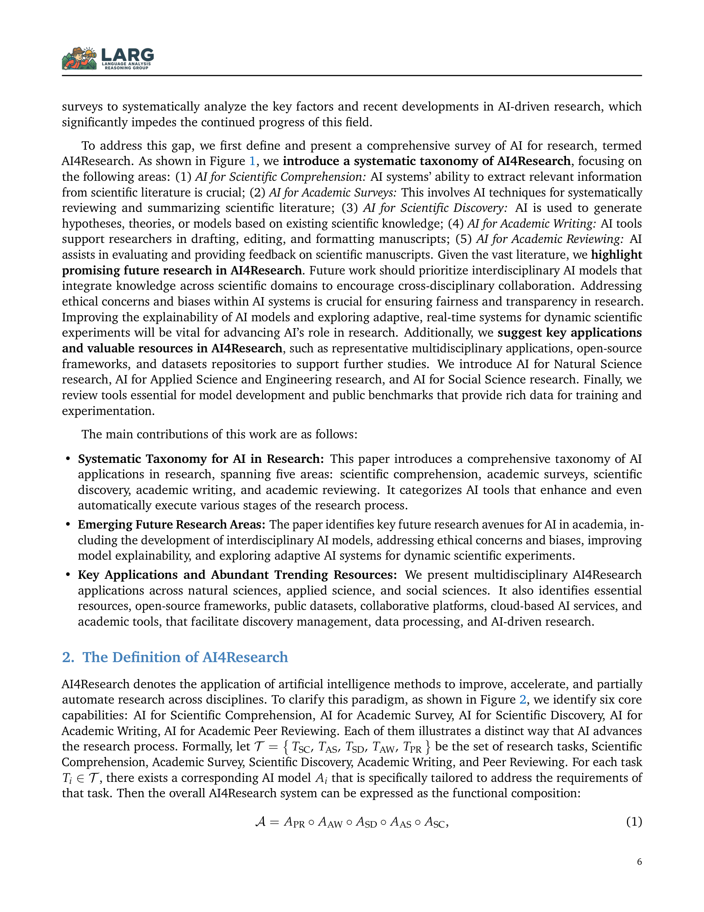
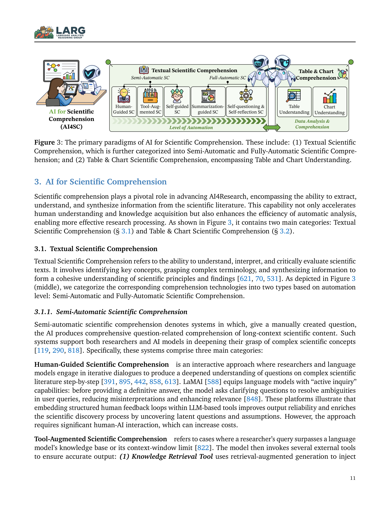
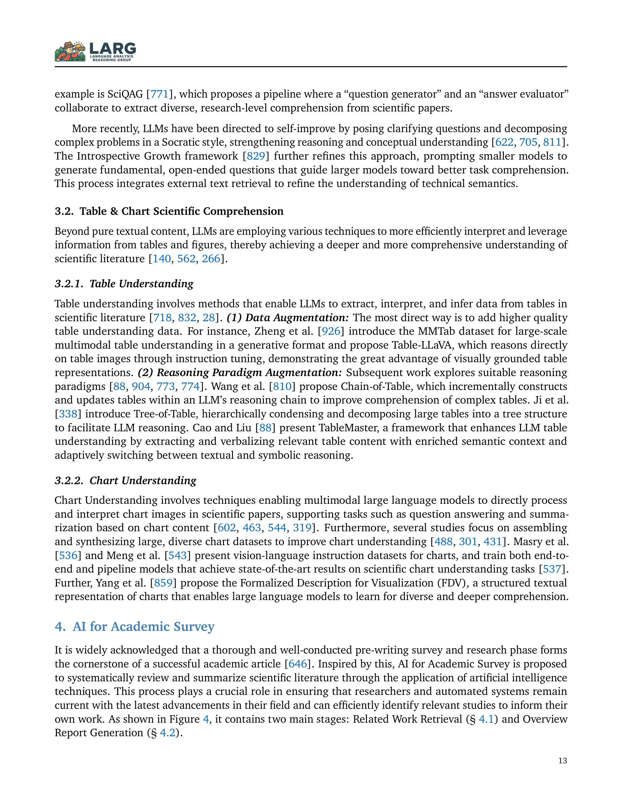

Figure 1
Figure 1
AI가 과학 연구의 전 생애주기(scientific research lifecycle)를 어떻게 지원하고 자동화할 수 있는지를 체계적으로 정리한 포괄적 서베이 논문이다. 연구 과정을 5가지 핵심 영역 -- (1) 과학 문헌 이해(Scientific Comprehension), (2) 학술 서베이(Academic Survey), (3) 과학적 발견(Scientific Discovery), (4) 학술 논문 작성(Academic Writing), (5) 학술 피어 리뷰(Academic Peer Reviewing) -- 으로 분류하는 AI4Research 택소노미를 제안하고, 각 영역의 최신 연구 동향, 도구, 데이터셋, 벤치마크를 120페이지에 걸쳐 집대성하였다.

Figure 2
OpenAI-o1, DeepSeek-R1 등 LLM의 논리적 추론 및 코딩 역량이 비약적으로 발전하면서, AI Scientist, AgentLab, Carl, Zochi 등 자율적 연구 수행 시스템에 대한 연구가 급증하고 있다. 그러나 이러한 AI4Research 분야를 포괄적으로 조망하는 체계적 서베이가 부재하여, 연구자들이 전체 그림을 파악하고 핵심 자원에 접근하기 어려운 상황이었다. 기존 서베이들은 주로 과학적 발견(Scientific Discovery)이나 논문 작성에 한정되어, 문헌 이해, 서베이 생성, 피어 리뷰 등 연구 생애주기의 다른 단계를 간과해왔다.

Figure 3

Figure 4
| 항목 | 점수 (5점 만점) | 비고 |
|---|---|---|
| 참신성 (Novelty) | 3.5 | 기존 서베이 대비 범위 확장이 주 기여; 새로운 방법론 제안은 아님 |
| 포괄성 (Comprehensiveness) | 5.0 | 120페이지, 수백 편 논문 커버; 연구 생애주기 전체를 아우름 |
| 구조화 (Organization) | 4.5 | 5영역 택소노미와 계층적 분류가 체계적이고 명료 |
| 실용성 (Utility) | 4.5 | 연구자를 위한 핵심 자원 카탈로그로서 높은 참조 가치 |
| 깊이 (Depth) | 3.0 | 방대한 범위 커버로 인해 개별 영역의 심층 분석은 다소 부족 |
| 종합 (Overall) | 4.0 | AI4Research 분야의 현재 지형도를 한눈에 조망할 수 있는 귀중한 레퍼런스 |
AI가 과학 연구의 전 과정을 어떻게 변화시키고 있는지를 문헌 이해부터 피어 리뷰까지 총망라한 가장 포괄적인 서베이이다. 5영역 택소노미는 이 분야의 연구 지형도를 이해하는 데 매우 유용한 프레임워크를 제공한다. 다만 서베이 논문의 특성상 개별 시스템의 심층 비교나 실험적 검증은 부재하며, 분야의 빠른 발전으로 시의성이 빠르게 감소할 수 있다. AI4Research에 입문하거나 전체 그림을 파악하고자 하는 연구자에게 필수적인 출발점으로 추천한다.